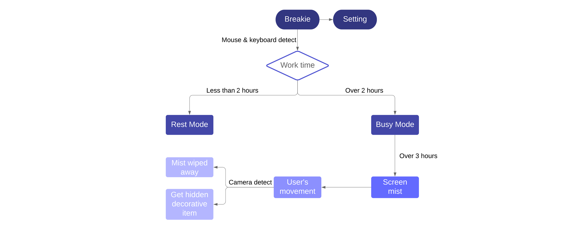

For this project, I designed an application for people working at the desk for long hours every day. Many people may feel cervical pain after constantly working for a long time and this application encourage them to move their muscles using a game to ease the negative effects.
It is known that cervical spondylosis is a normal part of aging. However, a research shows that there is a trend of more and more young people suffering from this kind of disease. It can be illustrated from the chart that the average age of people with cervical spondylosis decrease from 55 in 1980s to 39 in 2010.
There is a survey conducted by Kenneth Hansraj that the more time and larger angle people lower their head, the more pressure they will put on their spine. With the development of the technology, people tend to keep a fixed posture while working, surfing the Internet or playing games for a long time, which becomes the main cause of cervical spondylosis.
With 197 people filling the questionnaire, the result showed that among all of those people who worked over 3 hours without rest, over 50% of them would feel uncomfortable on their neck or joints in their shoulders. However, only 10% of them chose to do sports or exercises.
In addition, even though over 85% of people believed that they would learn and keep doing exercises to keep healthy on their necks and shoulders, 4 of the 6 people being interviewed admitted that although they knew the benefit of doing sports and not working on the computer for long hours, it is still hard for them to remind themselves of taking a rest or doing sports in the internals of work. They needed external force to push them to keep a healthy habit.
I made a electronic pet called Breakie that would stay at the bottom of people’s screen and remind people of taking a rest from time to time. It would detect user’s mouse and keyboard to determine whether users are working on computer at present and how long they have been working. It has different modes, with different motions, and would change according to user’s situation. When users are working for too long without rest, it will change its motion and automatically cover the screen with mist.
The mist will dissapear as time goes on. However, if users do exercises on their neck and shoulders, their movements will be detected by the camera of the computer, and the mist will be wiped away in the track of their movements. There will also be items behind the mist. Users need to shake or rotate heads to wipe away mist and catch the hidden item to decorate their electronic pets and get more motions.
Different motions in rest mode and busy mode based on how long users have been using their computers.